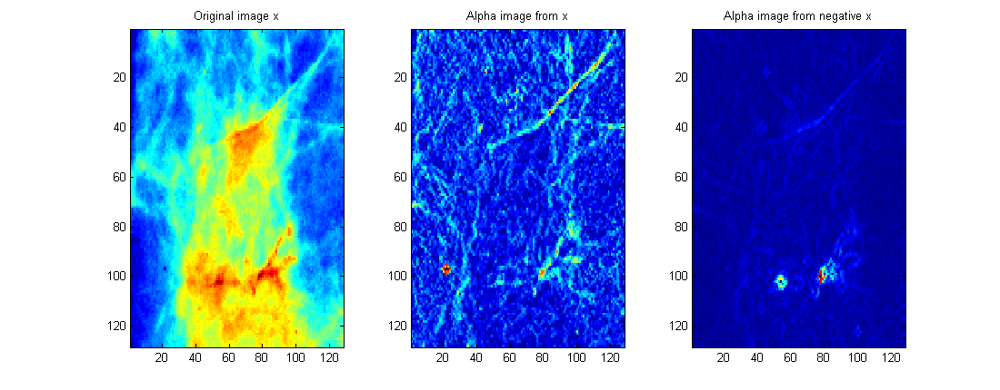
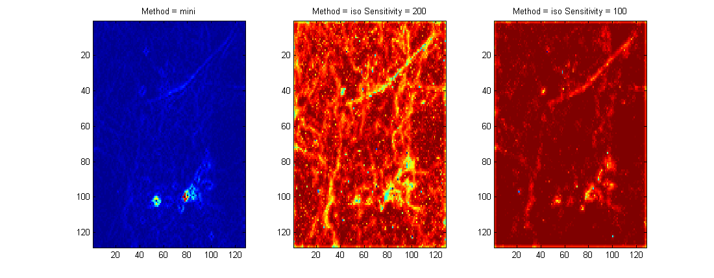

| FRACLAB Functions |
|
Computes corresponding alpha image from original, normalized, image. The pixels in the alpha image are estimated values of Holder
exponent at these points and they describe the local regularity.
NOTE: In the FracLab graphical interface this function is associated with the falphaimage function
and the spotted function.
A = alphaimage(x,rmax)
A = alphaimage(...,'Method')
A = alphaimage(...,'Scale')
A = alphaimage(x,rmax) Estimates the Holder "alpha" image, A, of the normalized grayscale
input image, x using a specific radius, rmax. The parameter rmax is an integer in (1:5)
which defines the largest measure domain.
|
Let Mi(m,n) denotes the amount of the chosen measure within measure domain of size i,
at particular image pixel with spatial coordinates (m,n). |
A = alphaimage(...,'Method') Estimates the Holder "alpha" image, A, using a specific measure type. The supported measure Methods can be choosen from the list below :
| Specifier | Method |
|---|---|
| 'max' | Maximum, square shaped domain |
| 'min' | Minimum, square shaped domain |
| 'sum' | Sum, square shaped domain |
| 'iso' | Iso, square shaped domain |
| 'maxi' | Maximum, diamond shaped domain |
| 'mini' | Minimum, diamond shaped domain (default) |
A = alphaimage(...,'Scale') Estimates the Holder "alpha" image A using a specific grayscale of the image. The supported Scales can be choosen from the list below :
| Specifier | Action Type |
|---|---|
| 'normal' | Use the original image (default) |
| 'neg' | Use the negative image of x |
images_loc = which('alphaimage.html');
x = imread(fullfile(fileparts(images_loc),'images_examples','Segmentation','m213.pgm'));
x = ima2mat(x);
A1 = alphaimage(x,2); A2 = alphaimage(x,2,'neg');
figure; subplot(1,3,1); imagesc(x); title('Original image x');
subplot(1,3,2); imagesc(A1); title('Alpha image from x');
subplot(1,3,3); imagesc(A2); title('Alpha image from negative x');

x = imread(fullfile(fileparts(images_loc),'images_examples','Segmentation','m213.pgm'));
x = ima2mat(x);
A1 = alphaimage(x,2,'neg');
A2 = alphaimage(x,2,'iso',200,'neg'); A3 = alphaimage(x,2,'iso',100,'neg');
figure; subplot(1,3,1); imagesc(A1); title('Method = mini');
subplot(1,3,2); imagesc(A2); title('Method = iso Sensitivity = 200');
subplot(1,3,3); imagesc(A3); title('Method = iso Sensitivity = 100');

[1] J. Lévy-Véhel, P. Mignot "Multifractal segmentation of images", Fractals, Vol. 2 No. 3, (2004) 379-382.
[2] T. Stojic, I. Reljin, B. Reljin "Adaptation of multifractal analysis to segmentation of microcalcifications in digital mammograms",
Physica A: Statistical Mechanics and its Applications, Vol. 367 No. 15, (2006) 494-508.
| |
Functions -- Alphabetical List | asmlevy | |